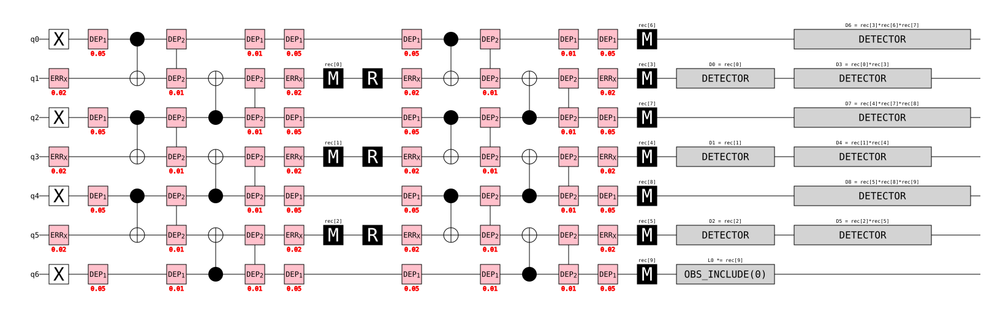
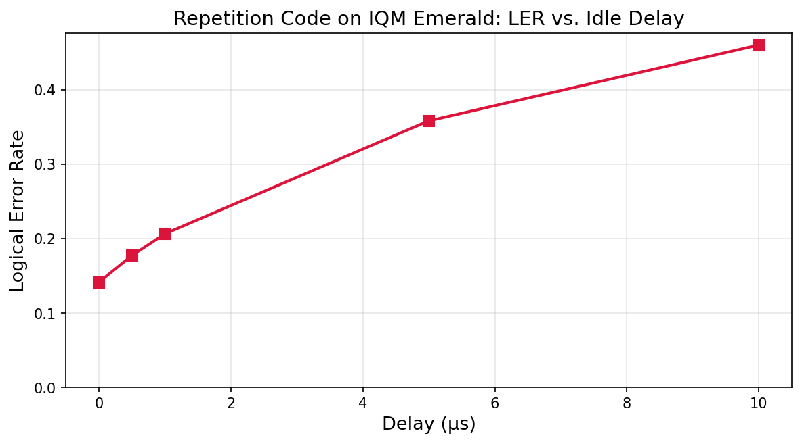

QEC Memory Experiment with the Repetition Code#
This tutorial demonstrates the DetectorExperiment class
applied to a repetition code, one of the simplest quantum error correction (QEC) codes.
We show:
Defining a repetition code experiment with noise and a tunable idle-delay parameter
to_stim(): extracting and visualizing the underlying Stim circuitIQM backend setup: connecting to IQM hardware and building a PassManager
Computing the logical error rate (LER) with Stim vs. real hardware
Batched sweep: studying how pulse-level delays degrade LER on hardware
to_iqm(): extracting the IQM pulse circuit and visualizing the compiled playlist
For a mathematically sound and complete treatment of all the concepts introduced in this tutorial, check out this work.
What is a repetition code?#
A repetition code encodes a single logical qubit across n physical data qubits by repeating the same state on each. For example, the logical state \(|1_L\rangle\) is encoded as \(|1111\rangle\) across four data qubits, and \(|0_L\rangle\) as \(|0000\rangle\).
The two kinds of qubits: data and ancilla#
A QEC code uses two types of physical qubits with very different roles:
Data qubits carry the encoded logical information. They are the qubits we care about protecting. Critically, we try to never measure them directly during error correction; doing so would collapse the logical state and destroy the information we’re trying to preserve.
Ancilla qubits are helper qubits that we do measure. In a repetition code on a linear chain, they are placed between data qubits:
data[0] - ancilla[0] - data[1] - ancilla[1] - data[2] - .... Their sole purpose is to extract error information from the data qubits without disturbing the encoded logical state.
Why can’t we just measure the data qubits directly?#
This is the central challenge of quantum error correction. If we measured a data qubit to check for errors, we would collapse the quantum state, destroying the very logical information we’re trying to protect. We cannot peek at individual qubits without disturbing them. Instead, we must extract information about errors indirectly, via the ancillas, without learning anything about the encoded logical state itself.
How parity checks work: a concrete example#
Suppose we encoded \(|1_L\rangle = |1111\rangle\) but a bit-flip error strikes the second data qubit, corrupting the state to:
Now let’s check parities (XOR) between neighboring pairs:
Pair |
XOR |
Result |
Meaning |
|---|---|---|---|
data[0] ⊕ data[1] |
1 ⊕ 0 |
1 (odd) |
⚠ Error detected between qubits 0 and 1 |
data[1] ⊕ data[2] |
0 ⊕ 1 |
1 (odd) |
⚠ Error detected between qubits 1 and 2 |
data[2] ⊕ data[3] |
1 ⊕ 1 |
0 (even) |
✓ No error between qubits 2 and 3 |
The pattern of parity violations, (1, 1, 0), uniquely identifies data[1] as the faulty
qubit. Notice we learned which qubit flipped without ever measuring its actual value.
We still don’t know whether data[1] was originally 0 or 1; we preserved the logical
information while detecting the error’s location.
In practice we don’t compute these parities classically. We use the ancilla qubits and CNOT gates to copy parity information onto the ancillas, which we can safely measure. Each ancilla sits between two data qubits and measures their XOR. This is syndrome extraction.
But what if two qubits flip? For example, \(|1111\rangle \rightarrow |1001\rangle\):
Pair |
XOR |
|---|---|
data[0] ⊕ data[1] |
1 ⊕ 0 = 1 |
data[1] ⊕ data[2] |
0 ⊕ 0 = 0 |
data[2] ⊕ data[3] |
0 ⊕ 1 = 1 |
The pattern (1, 0, 1) tells us errors occurred at both ends. But was it data[0] and
data[3] that flipped, or data[1] and data[2]? The repetition code cannot distinguish these
two cases. This is why the code distance (\(d\) = number of data qubits) matters: a
distance-\(d\) repetition code can detect up to \(d-1\) errors and correct up to
\(\lfloor(d-1)/2\rfloor\) errors.
What is a decoder and what does it do?#
The decoder is a component that receives the error syndrome and, based on that, makes a prediction about what corrections need to be applied. It receives two kinds of information, one static and one dynamic.
Static information: the detector error model (DEM)#
Before the experiment ever runs, we tell the decoder everything it needs to know about possible errors: where they can occur in the circuit, how likely they are, and which syndrome bits each error mechanism would affect. This is the detector error model (DEM), and it’s entirely determined at compile time.
We communicate the DEM to the decoder through noise annotations in the circuit. Within
Qrisp we achieve this via calls like stim_noise("DEPOLARIZE1", 0.01, data) and
stim_noise("DEPOLARIZE2", 0.01, data[i], ancilla[i]). These don’t cause errors
during execution; rather, they tell the decoder: “a depolarizing error of strength 0.01
can happen at this location, and if it does, here is which syndrome bits will be flipped.”
The DEM is the decoder’s static “map” of what can go wrong and how probable each failure
mode is.
Dynamic information: the error syndrome#
Each time the experiment runs, the quantum device produces a fresh error syndrome: a string
of bits indicating what was actually observed. A 1 means “something unexpected happened
at this check,” a 0 means “everything looks normal here.” The next section explains
exactly how this syndrome is produced; for now, think of it as the fingerprint the physical
errors left behind on this particular shot.
How the decoder processes these two inputs#
The decoder works in two stages:
Stage 1: Identify the errors. Using the DEM (the static map of possible errors) and the observed syndrome (the dynamic fingerprint), the decoder determines the most probable set of physical errors that could have produced the observed syndrome pattern. Internally, this is done by solving a minimum-weight perfect matching problem (using PyMatching), but the key intuition is simply: the decoder finds the most likely explanation for the syndrome.
Stage 2: Propagate the errors forward. Having identified which errors most likely occurred, the decoder then propagates those errors forward through the remainder of the circuit, tracking how each Pauli error would commute through subsequent gates and affect later qubits. The output of the decoder is a single-bit prediction: “based on the errors I detected, the final measurement of the logical qubit should be this.”
Computing the logical error rate#
Determining whether a logical error occurred on the physical device is done by the experiment framework (or the user). For each shot, the device also outputs an observable: the raw measurement of the logical qubit. The experiment framework compares the decoder’s prediction to this observable:
If the observable matches the prediction, the decoder successfully accounted for what happened. No logical error.
If the observable disagrees with the prediction, the decoder failed to explain the outcome. The errors it identified don’t account for what was observed. Logical error.
The logical error rate (LER) is then simply the fraction of shots where the decoder’s prediction was wrong:
A noise-free run gives LER = 0. A code overwhelmed by noise gives LER ≈ 0.5 (the decoder is guessing). Between those extremes, a good code gives an LER lower than the physical error rate. That is the whole point of error correction.
What are detectors and observables?#
In the previous section we described the error syndrome as a string of bits, the decoder’s dynamic input. Now we answer the question: where do those bits actually come from?
There are two kinds of parity concepts involved here. Let’s distinguish this cleanly before we start discussing how all of it relates to the decoder.
Quantum parity: what happens on the device#
Quantum parity is the parity information computed on the ancilla qubits via subsequent CNOT gates. When ancillas are entangled with data qubits via CNOTs and then measured, each ancilla’s measurement result reflects the XOR of its neighboring data qubits. For our \(|1011\rangle\) example:
ancilla[0]: data[0] ⊕ data[1] = 1 ⊕ 0 = 1
ancilla[1]: data[1] ⊕ data[2] = 0 ⊕ 1 = 1
ancilla[2]: data[2] ⊕ data[3] = 1 ⊕ 1 = 0
This [1, 1, 0] is the raw output of the quantum device: the parity configuration of the
data qubits at a single point in time. By itself it doesn’t tell us which error occurred.
It’s the raw material, not the finished product.
Classical parity: building the error syndrome#
Classical parity is what happens after the quantum measurements are done. It operates purely on bits (measurement outcomes), never on qubits. This is where the error syndrome (the decoder’s dynamic input) is actually constructed.
The building block is the detector: a classical parity check whose expected value is deterministic and known in advance. Think of each detector as asking: “did anything change here compared to what I expected?” The collection of all detector outcomes across all rounds forms the error syndrome vector that the decoder receives.
In our repetition code, detectors work by comparing ancilla measurements across rounds:
Round |
Raw syndrome |
Compared to |
Detector outcome |
|---|---|---|---|
1 |
|
expected |
[1,1,0]: detectors fire because syndromediffers from initial expectation
|
2 |
|
round 1 |
[0,0,0]: detectors quiet because syndromedidn’t change
|
2 (if new error) |
|
round 1 |
[0,1,1]: detectors fire where thesyndrome flipped
|
The key insight: detectors track changes, not values. Once flipped, an error produces a non-zero raw syndrome in every round, but the detectors only fire in round 1. After that, the syndrome is stable and the detectors are silent. Only new errors cause detector firings in later rounds.
Observables#
An observable is mechanically identical to a detector. Both are just classical parity checks. The only difference is intent: a detector tracks whether the syndrome changed (used for error identification), while an observable tracks the logical state itself (used for the final LER comparison).
In our repetition code experiment we prepare \(|1_L\rangle = |1111\rangle\). Every data
qubit should measure 1 in a noise-free execution, so any single data-qubit measurement
has a deterministic expected value. We designate the last data qubit as the observable and
compare its measurement to the expectation 1.
How Qrisp’s parity() function unites detectors and observables#
Both detectors and observables are created by the same Qrisp function:
parity(). It’s the single API for defining classical parity checks.
The result \(p\) is 0 when the measured parity matches the expectation, and
1 when it doesn’t.
When passed boolean Jax arrays (e.g. the result of measure() on a
QuantumArray), parity() operates element-wise: it checks
that all input arrays have the same shape, XORs corresponding elements, and returns a Jax
array of that shape.
Two keyword arguments control the behavior:
Argument |
Default |
Purpose |
|---|---|---|
|
|
The expected XOR value. |
|
|
Whether this is a detector ( |
Creating a detector (feeds the decoder’s dynamic input):
# "I expect this ancilla to measure 0. Tell me if it doesn't."
parity(ancilla_measurement, expectation=0)
When the circuit is converted to Stim, a parity with observable=False becomes a
``DETECTOR`` instruction.
Creating an observable (checked against the decoder’s prediction):
# "I prepared |1⟩, so this data qubit should measure 1."
parity(data_measurement, expectation=1, observable=True)
When observable=True, the parity becomes an ``OBSERVABLE_INCLUDE`` instruction in
Stim.
How Qrisp’s parity() differs from Stim’s DETECTOR/OBSERVABLE_INCLUDE#
There’s an important difference in how the expectation is handled:
In Stim, a
DETECTORinstruction automatically computes the appropriate expectation. Stim simulates the circuit’s noise-free behavior, so when you writeDETECTOR rec[-1] rec[-3], Stim internally determines what the XOR should be in the absence of errors. You don’t specify the expectation; Stim figures it out.In Qrisp,
parity()requires you to explicitly provide theexpectationargument. This is a deliberate design choice: Qrisp must work in scenarios where no noise-free reference simulation is available. By making the expectation part of the function signature, Qrisp ensures the parity check is self-contained and interpretable.
The trade-off is that you, the programmer, must correctly specify what you expect. Getting the expectation right is a critical part of writing correct QEC code in Qrisp.
What does DetectorExperiment give us?#
So far we’ve discussed detectors, observables, error syndromes, the DEM, and the decoder, all as abstract concepts. In practice, wiring all of this together by hand is tedious.
DetectorExperiment is a decorator that automates this entire
pipeline. You write a QEC experiment as a plain Jasp-traceable function that returns
(detectors, observables) using parity(). Then you decorate it with
@DetectorExperiment, and the decorator gives you a fully instrumented experiment object
with the following methods:
Method |
What it does |
|---|---|
|
Runs the experiment, extracts detector outcomes, builds the DEM from
your |
|
Same as above, but sweeps over multiple argument tuples in a single batched hardware submission. |
|
Extracts the underlying Stim circuit for a given set of arguments. |
|
Converts the experiment to an IQM Pulse Circuit. |
In short: you focus on defining the syndrome extraction and the parity checks.
DetectorExperiment handles the decoding, the bookkeeping, and the hardware submission.
Experiment Definition#
import jax.numpy as jnp
from qrisp.interface import StimBackend
from qrisp import (
QuantumArray,
QuantumBool,
x, cx, # gates
measure, reset, # measurement & reset
parity, # classical parity checks → detectors & observables
)
from qrisp.misc.stim_tools import stim_noise # builds the detector error model (DEM)
from iqm.qrisp_iqm import DetectorExperiment, delay
# ── Detector error model (DEM) ───────────────────────────────────────────
depolarize_strength = 0.01 # single- and two-qubit depolarizing noise
X_error_strength = 0.01 # bit-flip noise on ancilla (measurement error)
# ── Code parameters ──────────────────────────────────────────────────────
code_size = 4 # number of data qubits (code distance)
rounds = 2 # syndrome extraction rounds
# ── Syndrome extraction ──────────────────────────────────────────────────
def syndrom_round(data, ancilla, delay_time, do_reset=True):
"""One round of syndrome extraction.
Entangles ancillas with their neighboring data qubits via CNOTs
so each ancilla measurement reveals the XOR (quantum parity) of
its two data neighbors, without collapsing the data qubits themselves.
"""
if do_reset:
reset(ancilla)
stim_noise("X_ERROR", X_error_strength, ancilla)
stim_noise("DEPOLARIZE1", depolarize_strength, data)
# Additional idle delay: native IQM pulse operation
delay(data, duration=delay_time)
delay(ancilla, duration=delay_time)
# CNOT layer 1: data[i] → ancilla[i]
for i in range(ancilla.size):
cx(data[i], ancilla[i])
for i in range(ancilla.size):
stim_noise("DEPOLARIZE2", depolarize_strength, data[i], ancilla[i])
stim_noise("DEPOLARIZE1", depolarize_strength, data[-1])
# CNOT layer 2: data[i+1] → ancilla[i]
for i in range(ancilla.size):
cx(data[i+1], ancilla[i])
for i in range(ancilla.size):
stim_noise("DEPOLARIZE2", depolarize_strength, data[i+1], ancilla[i])
stim_noise("DEPOLARIZE1", depolarize_strength, data[0])
# pre-measure noise and idling
stim_noise("X_ERROR", X_error_strength, ancilla)
stim_noise("DEPOLARIZE1", depolarize_strength, data)
# measure() on a QuantumArray returns a Jax array of shape (ancilla.size,)
return measure(ancilla)
def multi_round(data, ancilla, amount, delay_time):
"""Run multiple syndrome rounds and build the error syndrome."""
parity_outcome_list = []
previous_meas_res = syndrom_round(data, ancilla, delay_time, do_reset=False)
parity_outcome_list.append(parity(previous_meas_res, expectation=0))
for i in range(1, amount):
new_meas_res = syndrom_round(data, ancilla, delay_time)
detector_value = parity(new_meas_res, previous_meas_res, expectation=0)
parity_outcome_list.append(detector_value)
previous_meas_res = new_meas_res
return jnp.vstack(parity_outcome_list), new_meas_res
# ── Decorated experiment ─────────────────────────────────────────────────
@DetectorExperiment
def rep_code_experiment(delay_time):
"""Repetition code memory experiment parameterized by idle delay time."""
qubits = QuantumArray(shape=(2 * code_size - 1,), qtype=QuantumBool())
data = qubits[::2] # code_size data qubits
ancilla = qubits[1::2] # code_size - 1 ancilla qubits
# Prepare logical |1_L⟩
x(data)
# Syndrome extraction
syndrom_detectors, last_anc_meas_res = multi_round(
data, ancilla, rounds, delay_time
)
# Final data-qubit measurement
data_meas_res = measure(data)
# Measurement-round detectors
measurement_detectors = []
for i in range(data.size - 1):
measurement_detectors.append(
parity(data_meas_res[i], last_anc_meas_res[i], data_meas_res[i + 1],
expectation=0)
)
# Full error syndrome
detectors = list(syndrom_detectors.flatten()) + measurement_detectors
# Observable
observable = parity(data_meas_res[-1], observable=True, expectation=1)
return detectors, [observable]
print("Experiment defined.")
The output of this cell is:
Experiment defined.
Extracting the Stim Circuit (to_stim)#
The to_stim() method extracts the Stim circuit for a given
set of arguments. Stim is a fast C++ simulator for Clifford circuits with noise.
The extracted circuit includes:
Qubit declarations: all physical qubits used in the experiment
Quantum gates: the same sequence of X, H, CNOT, and measurement operations
Noise instructions:
DEPOLARIZE1,DEPOLARIZE2, andX_ERRORoperationsDetector annotations:
DETECTORinstructionsObservable annotations:
OBSERVABLE_INCLUDEinstructions
The SVG timeline diagram is a useful debugging tool. You can verify at a glance that
DETECTOR and OBSERVABLE_INCLUDE annotations are placed correctly, noise instructions
appear where intended, and the gate sequence matches your mental model of the circuit.
import stim
from IPython.display import SVG, display
stim_circuit = rep_code_experiment.to_stim(0)
print(f"Qubits: {stim_circuit.num_qubits}")
print(f"Detectors: {stim_circuit.num_detectors}")
print(f"Observables: {stim_circuit.num_observables}")
svg_diagram = str(stim_circuit.diagram(type="timeline-svg"))
display(SVG(data=svg_diagram))
Output:
Qubits: 7
Detectors: 9
Observables: 1

IQM Backend Setup#
Before computing error rates on real hardware, we connect to IQM and set up a
PassManager that handles two critical compilation steps.
Why do we need layout and gate conversion?#
Our circuit uses logical qubits, but real hardware has physical qubits arranged in a
specific topology. The layout pass (vf2pp_layout()) finds an
embedding of our circuit’s interaction graph into the device topology using the VF2++
subgraph isomorphism algorithm.
The gate conversion passes (convert_to_cz(), convert_to_prx())
decompose non-native gates (particularly CNOTs) into the IQM-native CZ gate combined
with PRX rotations.
import matplotlib.pyplot as plt
from qrisp import PassManager, convert_to_cz, convert_to_prx
from iqm.qrisp_iqm import vf2pp_layout, IQMBackend, measurement_parallelization
# Get your API Key at https://resonance.iqm.tech/
API_KEY = "YOUR_API_KEY"
server_url = "https://resonance.iqm.tech/"
backend = IQMBackend(
device_instance="emerald",
api_token=API_KEY,
server_url=server_url,
pass_manager=PassManager()
)
connectivity = backend.connectivity
backend.pm += vf2pp_layout(connectivity)
backend.pm += convert_to_cz()
backend.pm += convert_to_prx
# Parallelize readouts. Essential for realistic LER on hardware.
backend.pm += measurement_parallelization
print(f"Connectivity has {len(connectivity)} edges")
print("Backend and PassManager ready.")
Single LER Computation#
We compute the logical error rate with zero delay using both Stim (fast classical simulation) and the real IQM hardware for comparison.
Stim simulates the circuit with the exact noise model we specified, giving a baseline LER under idealised Pauli noise.
Hardware runs the real circuit with real physical noise: T₁/T₂ decoherence, gate miscalibration, crosstalk, and other effects.
shots = 10_000
ler_stim = rep_code_experiment.compute_LER(0, shots=shots, backend=StimBackend())
print(f"Stim - Logical error rate (delay=0, {shots} shots): {ler_stim:.4f}")
ler_hw = rep_code_experiment.compute_LER(0, shots=shots, backend=backend)
print(f"Emerald - Logical error rate (delay=0, {shots} shots): {ler_hw:.4f}")
Example output (emerald, 10,000 shots):
Stim - Logical error rate (delay=0, 10000 shots): 0.0316
Emerald - Logical error rate (delay=0, 10000 shots): 0.1453
Batched LER: Impact of Pulse-Level Delays on Hardware#
The delay operation is a native IQM pulse instruction. It inserts real idle time during
which qubits decohere via T₁/T₂ processes.
Our repetition code only protects against bit-flip (X) errors. Amplitude damping (T₁) causes such errors on the data qubits. By sweeping the delay, we directly observe how idle-induced decoherence degrades the logical error rate.
hardware_delays = [
(0,),
(500e-9,),
(1e-6,),
(5e-6,),
(10e-6,),
]
ler_hw = rep_code_experiment.batched_compute_LER(
hardware_delays, shots=shots, backend=backend
)
for args, ler in zip(hardware_delays, ler_hw):
print(f" delay = {args[0]:<10.1e} → LER = {ler:.4f}")
Example output (emerald, 10,000 shots):
delay = 0.0e+00 → LER = 0.1412
delay = 5.0e-07 → LER = 0.1771
delay = 1.0e-06 → LER = 0.2063
delay = 5.0e-06 → LER = 0.3583
delay = 1.0e-05 → LER = 0.4603
import matplotlib.pyplot as plt
hw_delays_us = [args[0] * 1e6 for args in hardware_delays]
fig, ax = plt.subplots(figsize=(8, 4.5))
ax.plot(hw_delays_us, ler_hw, "s-", color="crimson", linewidth=2, markersize=8)
ax.set_xlabel("Delay (µs)", fontsize=13)
ax.set_ylabel("Logical Error Rate", fontsize=13)
ax.set_title("Repetition Code on IQM Emerald: LER vs. Idle Delay", fontsize=14)
ax.grid(True, alpha=0.3)
ax.set_ylim(bottom=0)
plt.tight_layout()
plt.show()

Extracting the IQM Circuit (to_iqm) & Playlist Visualization#
The to_iqm() method converts the experiment into an IQM Pulse
Circuit object.
iqm_circuit = rep_code_experiment.to_iqm(
0, topology=backend.iqm_client.get_dynamic_quantum_architecture(), pm=backend.pm
)
print(f"IQM circuit: {len(iqm_circuit.instructions)} instructions")
Output:
IQM circuit: 85 instructions
The IQM Pulse Circuit is compiled by Pulla (IQM’s pulse-level compiler) into a playlist: a timed sequence of analog waveform samples for each drive line.
from iqm.pulla.pulla import Pulla
pulla = Pulla(server_url, quantum_computer="emerald", token=API_KEY)
compiler = pulla.get_standard_compiler()
run_definition, context = compiler.compile([iqm_circuit])
print("Playlist compiled successfully.")
from iqm.pulse.playlist.visualisation.base import inspect_playlist
from IPython.display import HTML, display
html_content = inspect_playlist(run_definition.sweep_definition.playlist, [0])
display(HTML(html_content))
The interactive HTML visualization shows pulse envelopes, timing, and parallelism. You can
view the full playlist visualization here.
Note
This section only demonstrates how to hand a DetectorExperiment result over to
Pulla. For detailed pulse-level compilation documentation, see
docs.iqm.tech/iqm-pulla.